翻出 2014 年 10 月底印出來的那張可樂旅遊行前說明表，紙張邊角已經有些微皺，但當年的記憶瞬間清晰了起來。

翻出 2014 年 10 月底印出來的那張可樂旅遊行前說明表，紙張邊角已經有些微皺，但當年的記憶瞬間清晰了起來。
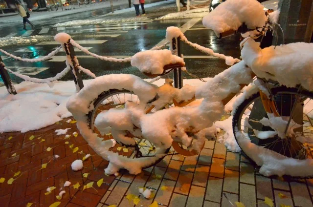
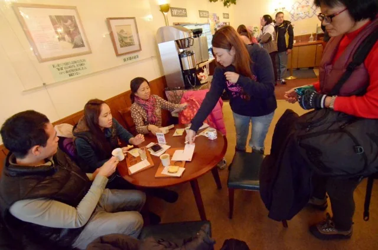
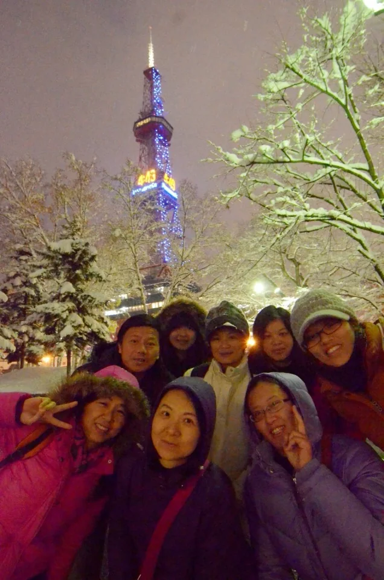
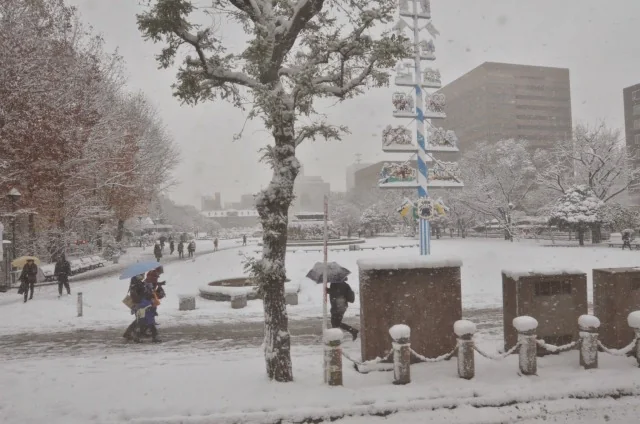
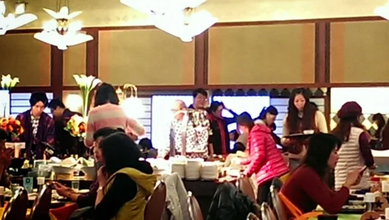
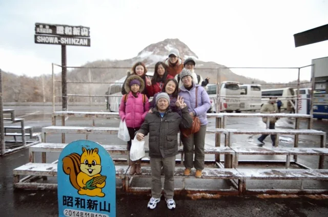
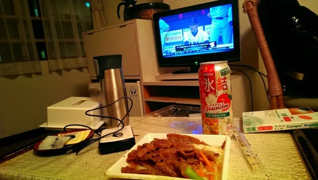
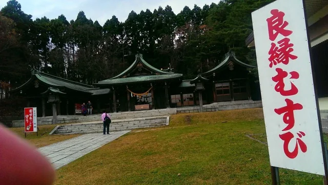
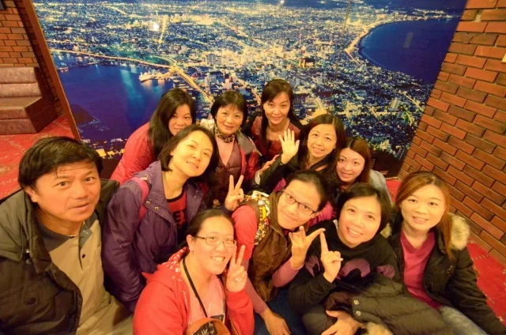
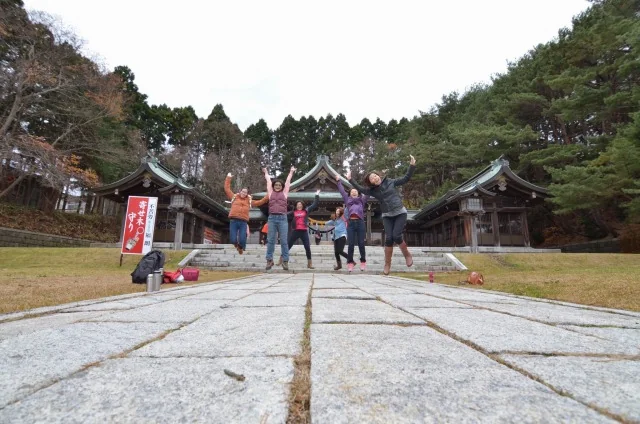
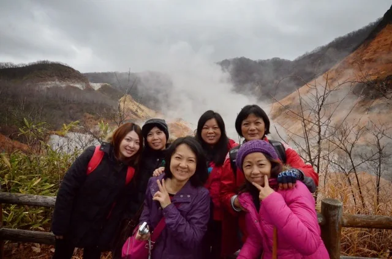
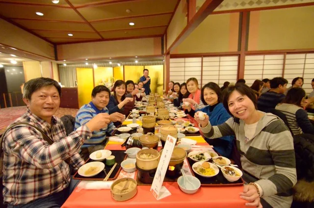
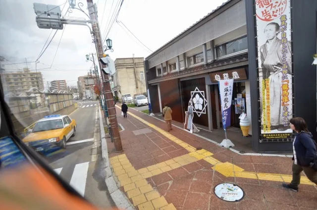
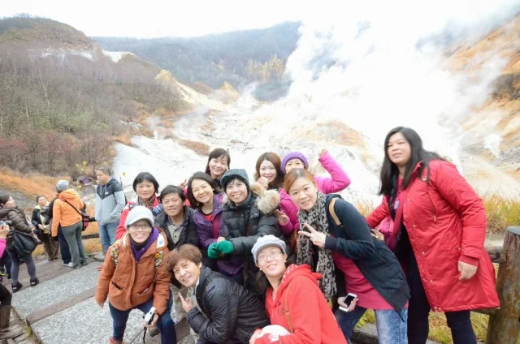
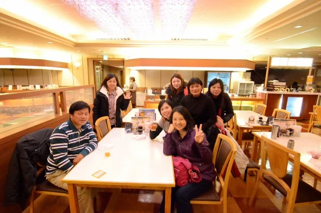
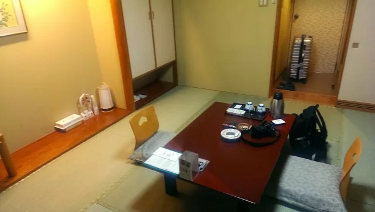
那時剛進公司快滿一年，這趟國外員工旅遊同部門的只有我一個人。公司的員工旅遊採定額補助，當時好像是6000（疫情後變成4000的樣子)，也就是團費可以扣掉的額度。
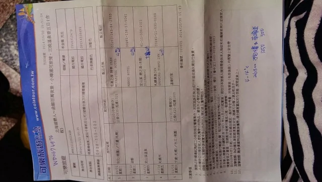
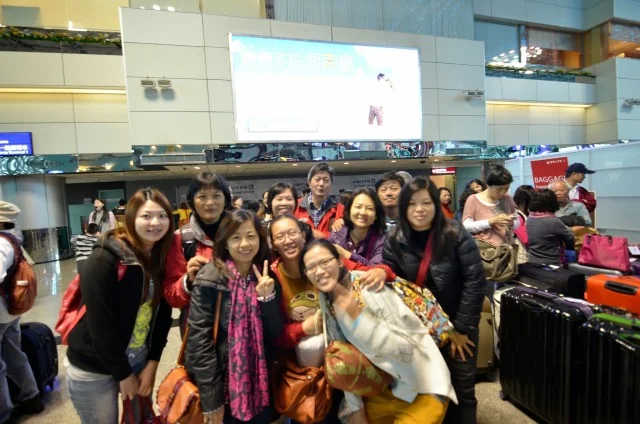
帶團的領隊叫李金龍，大家都喊他「可樂龍」，看來像是個五十幾歲、日文溜得像母語的台灣老江湖～！行前我原本已經做好了跟領隊同房的心理準備，沒想到分完房卡，可樂龍壓根沒跟我擠，直接讓我一個人獨享整間房。這四個晚上，從溫泉飯店的大和室到市區商旅，全是我一人的天下，這趟旅程的體感直接衝上滿分。
那張行程表上，還留著我當年用藍原子筆隨手抄下的字跡：右下角寫著「4~14°C」的氣溫預報、團費「26300」、五天小費「1250」和「車接送 500」；而在四晚飯店的欄位旁，則工工整整記著「1F no wifi」、「大廳 wifi」與「wifi」。2014 年的日本溫泉鄉，房間裡還沒全面普及無線網路，晚上想滑個 IG 發照片，還得先搞清楚哪間飯店得抱著手機去一樓大廳坐禪。
第二天往南推進到函館，天氣開始變臉。下午在街頭遇見坂本龍馬的雕像後，天色一路暗沉，入夜後更直接下起傾盆大雷雨。行程表標題上印得斗大的「函館百萬夜景」毫無懸念地泡湯了。
當晚住進湯之川溫泉的老字號「萬惣飯店（Banso Hotel）」。那時的萬惣還沒經歷後來的現代化改建，房間帶著濃濃的昭和老舊感，但一個人住起來倒也十分自在。剛吃飽的夜晚，外頭雷雨交加，附近只有一家店能晃，加上小七的補給，乾脆直接買碗比台灣吉野家好吃太多的日本吉野家牛肉飯回房。打開電視，剛好遇上「2014 日米野球」首戰轉播。窗外是狂風暴雨，房裡是熱騰騰的牛丼配棒球，日本武士隊正跟大聯盟明星隊真刀真槍對決，沒看到百萬夜景的遺憾，瞬間被這碗牛肉飯和球賽填得滿滿當當。
📌 函館湯之川「萬惣」與 2014 日米野球首戰：位於函館湯之川溫泉的「萬惣」創業於明治年間，2014 年當時仍保留著舊時代溫泉旅館的懷舊格局（後於 2016 年由 ORIX 集團大幅翻新重開）。而 2014 年 11 月 12 日當晚，正是睽違八年舉辦的「日米野球」第一戰於大阪京瓷巨蛋開打之夜，由前田健太先發領軍，最終侍 Japan 以 2:0 完封 MLB 明星隊。
隔天早上的函館朝市還在飄雨，攤商吆喝聲此起彼落，有些搞笑浮誇的烏賊包裝明知帶不回台灣，還是忍不住拍了下來。隨著遊覽車往道央移動，沿途便利商店與街頭看板幾乎被日本火腿鬥士隊包場——在北海道，「一切都是為了陽」，到處都是陽岱鋼的身影。再往山上走，深秋的山頭已經覆上一層「山之雪」，路邊的積雪厚得像切塊的雪糕。
走在冷冽刺骨的湖邊時，四周的風景靜得像幅畫。那時跟在團員身後，腦子裡想的卻是離開屆滿一年的好友。一年前的告別還歷歷在目，加上剛進公司滿一年、心裡那股還沒完全定下來的漂浮感，全在這片冰冷的湖光山色裡慢慢沉澱下來。冷風吹在臉上很凍，但心裡那些雜亂的念頭，卻意外地安靜了。
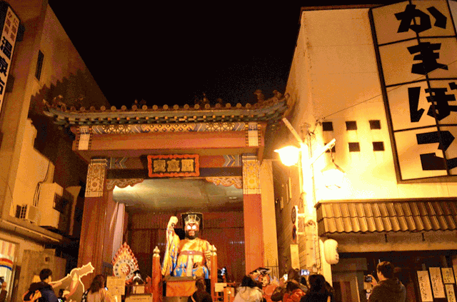
定山溪溫泉的「鹿之湯本館」，晚餐又是熟悉的溫泉飯店自助餐，吃完到大廳蹭完 Wi-Fi 便早早歇息。直到第四天進了小樽與札幌、住進全館終於有 Wi-Fi 的「札幌東急 INN」，才重新回到熱鬧的都市節奏。晚上晃進鼎鼎大名的狸小路商店街，看著寬敞卻沒什麼人潮的街景，忍不住在心裡下了個註解：原來狸小路，就是地廣人稀版的難波啊。
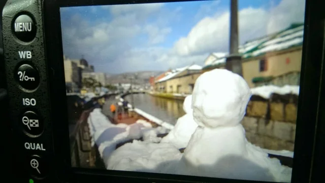
11 月 15 日午後，搭上華航 CI131 班機離開新千歲機場，看著航廈告示牌上的「首爾、上海、台灣」，結束了這趟一個人的北海道員旅。
很有意思的是，過了幾年參加公司的第二次國外員工旅遊時，在機場與景點穿梭的別團人馬裡，我竟然又看見了可樂龍李大哥的身影。他依然中氣十足地舉著旗子帶隊，而那時的我，早已不是 2014 年那個走在北海道寒涼湖畔、對未來還有些迷惘的新人了。